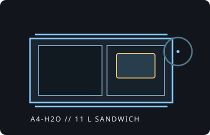

[ IDENTIFIED ENCLOSURE // 11 L SANDWICH CASE ]
Lian Li A4-H2O
326 × 140 × 244 mm (D × W × H), approximately 11 L; compact Mini-ITX case with a top 240 mm liquid-cooling position.

VARIANT / ARCHIVAL CAVEAT: A4-H2O is a Mini-ITX SFX build, not a general-purpose tower. The radiator/fan stack, graphics card and SFX-L PSU compete for internal volume.
Mechanical specifications and fit
| Catalog identity | Lian Li A4-H2O Mini-ITX sandwich chassis. |
|---|---|
| Dimensions and volume | 326 × 140 × 244 mm (D × W × H); about 11 L. |
| Board, GPU and cooler | Mini-ITX board; three-slot GPU up to 322 mm long and approximately 61 mm thick. CPU air cooler height up to 55 mm. |
| Radiator / PSU | Top radiator support up to 240 mm; combined radiator and fan thickness is limited to approximately 55 mm. Supports SFX and SFX-L PSU; verify SFX-L cable clearance at the GPU. |
| Drive bays | Two 2.5-inch drive mounts; no native 3.5-inch bay. Drive/PSU cable routing remains configuration-sensitive. |
| Revision / identification | Check that the riser generation and PCIe link specification match the motherboard/GPU combination and exact case package. |
Compatibility notes
The nominal 322 mm GPU length is not enough to establish fit: compare width, thickness, power connector location and cable bend allowance. The 55 mm CPU-cooler limit makes this a low-profile air-cooling design. For liquid cooling, a 240 mm radiator with fans at or below the allowed combined thickness is needed; thicker stacks can clash with the board or GPU space.
- Plan the GPU and radiator dimensions together rather than treating both as independent maxima.
- Use an SFX PSU when cable routing or card length makes SFX-L crowded.
- Confirm whether a selected GPU uses a standard or reverse power connector and allow room to close the panel without force.
Manufacturer specifications and downloads
- Lian Li A4-H2O official product pageManufacturer specifications and assembly overview.
- Lian Li A4-H2O manual (manufacturer-linked PDF)Product manual linked from Lian Li’s official A4-H2O downloads section, with assembly and fit diagrams.